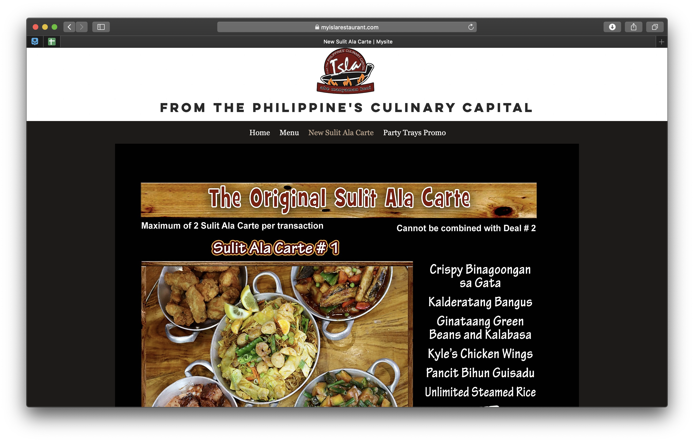
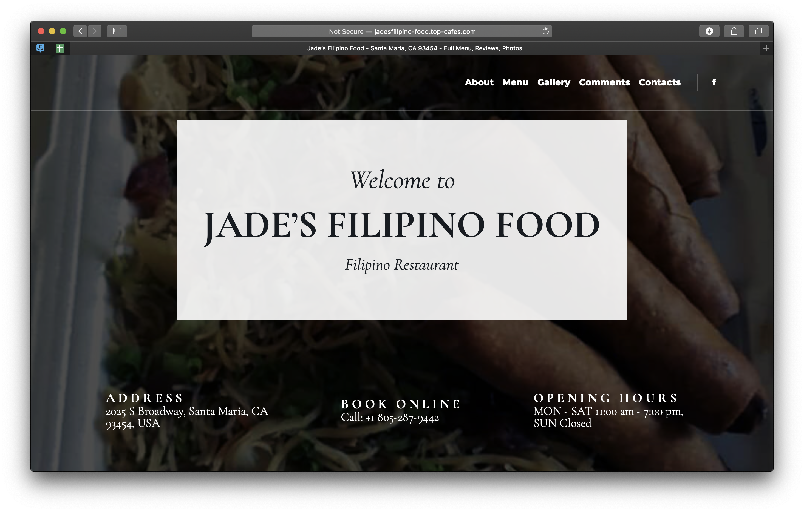
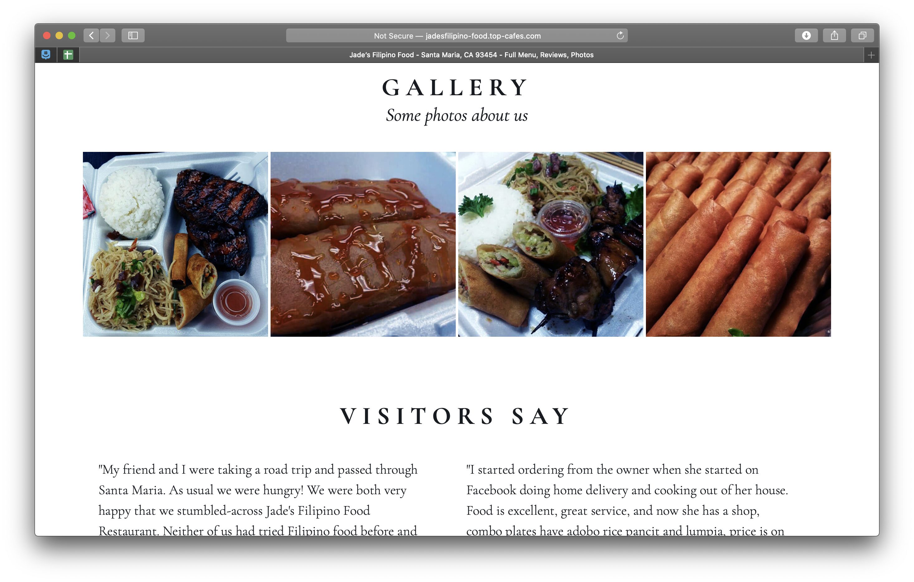
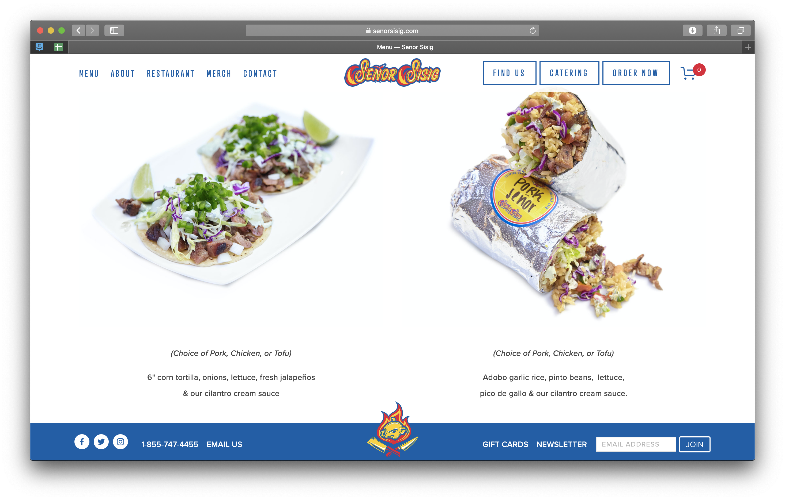
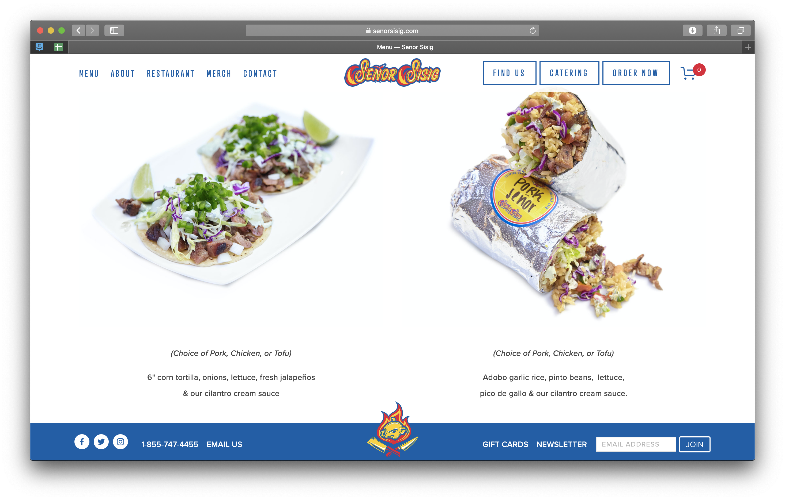

Final project proposal
Introduction
Lola Angele's Purong Pilipino
San Luis Obispo's best Filipino food. Traditional Filipino fare made with the freshest local ingredients. Homestyle meals made with Lola's love. Located in 1988 Marsh Street in the heart of downtown.
Target audience
Students, especially the vibrant Pilipinx American community in Cal Poly. As well as local community members who just want to try something new.
They want to see the menu, hours, and location. With us in a predominantly-White community, most have not been exposed to Pilipinx food and what exactly to expect when they come in.
Comparative analysis
Isla: From the Culinary Capital of the Philippines
https://www.myislarestaurant.com

Jade's Filipino Food
http://jadesfilipino-food.top-cafes.com
 Señor Sisig
 

Website content
Home
Serving San Luis Obispo's best Pilipino food. Local ingredients with hearty homestyle flavors.
[A photo of Lola's chicken adobo]
About Us
Born out of the minds of a Cal Poly student and his Pilipina grandmother, Lola Angele's Purong Pilipino aims to bring the taste of home to the Central Coast. With only the freshest local ingredients, Lola's aims to reenvision Pilipinx cuisine to pack flavor without compromising health and sustainability.
[A photo of Tita Jhen's Vegan Leche Flan]
Menu
Appetizers
- Fried Calamari
- Fried Lumpia
- Pork Siomai
[A photo of a platter of Lumpia, or Filipino egg rolls.]
Soup by the Cup and Bowl
- Sinigang
- Chicken Tinola
- Chicken Sopas
[A photo of a large bowl of shrimp sinigang, a tangy soup made from tamarind.]
Breakfast
- Silog Plate
- Egg Torta
- Tsamporado
[A photo of a tosilog plate, which is Filipino bacon, garlic fried rice, and an egg.]
Lunch and Dinner
- Adobo
- Kare Kare
- Lengua
[A photo of a chicken adobo plate, or chicken marinated in a soy sauce-vinegar reduction.]
Find Us
Located in the heart of San Luis Obispo's historic downtown, Lola's is your one-stop shop for Pilipinx flavors.
Address: 1988 Marsh Street San Luis Obispo, 93405
Phone: (805)202-0828
For catering contact us at lolaspurongpilipino@abc.com
[A photo of the restaurant.]